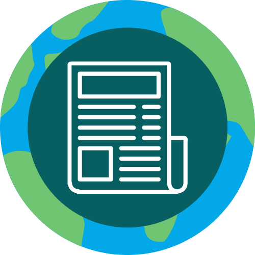
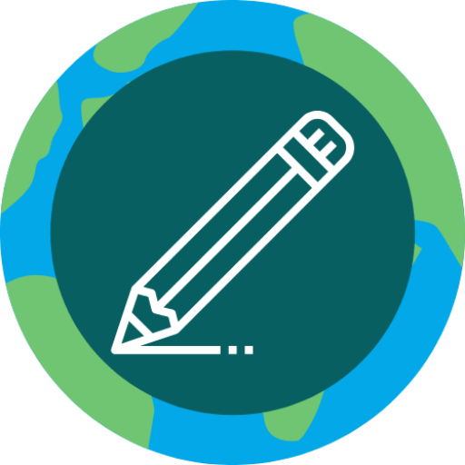
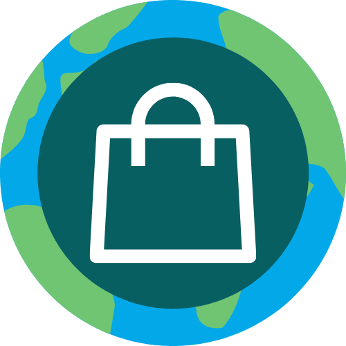

Eco Notes ONG engloba a toda la organizacion y es la rama principal de todas las divisiones de Eco Notes.
Eco Notes News es un portal de noticias ambientales con el fin de informar sobre la naturaleza, violaciones
de la misma y generar conciencia en las personas.

Eco Notes App es nuestra aplicacion ecologica de notas que busca remplazar los anotadores tradicionales
y con el 75% de los ingresos de anuncios plantar arboles

Eco Notes Store es nuestra tienda y vivero ecologico en el cual generamos productos y plantas de manera ecofriendly
